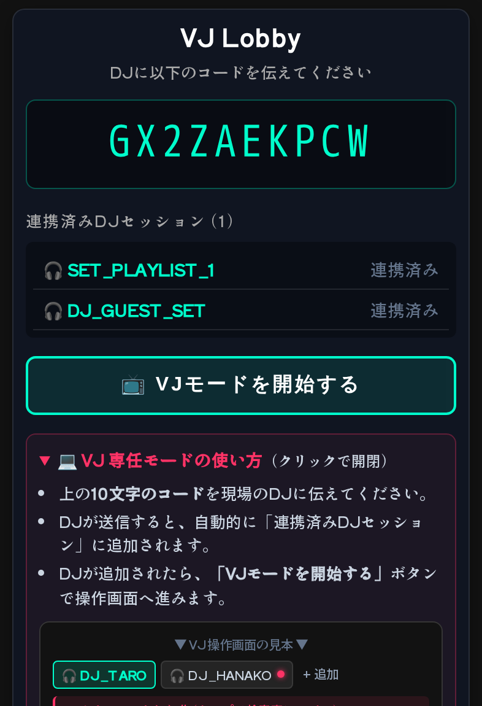
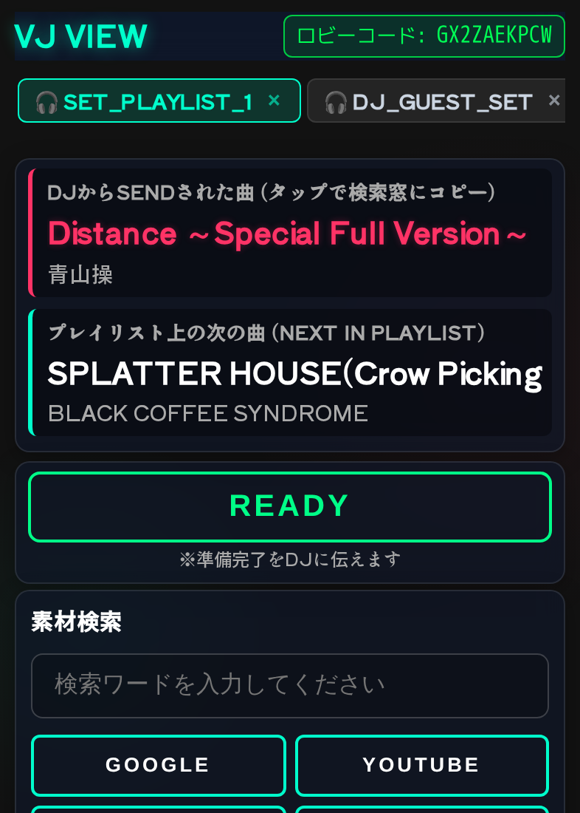
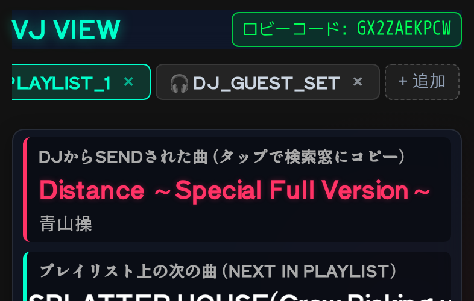
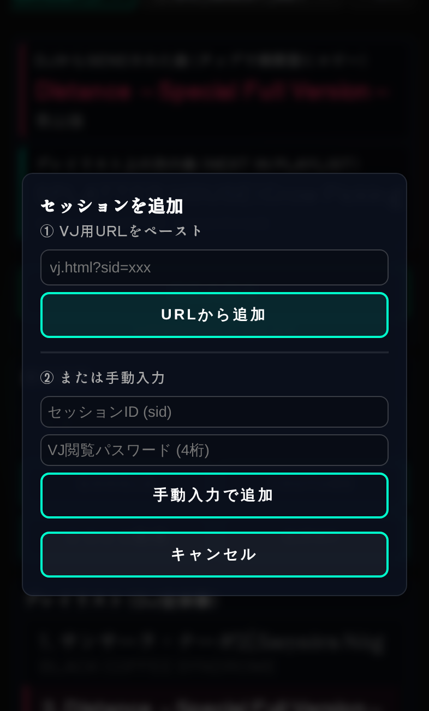

VJ向け 機能・操作説明書
DJから届く曲情報を受け取り、素材を検索し、準備完了をREADYで返すための現場向けガイドです。複数DJをタブで管理する流れを中心に説明します。
1VJロビーを開始する
VJページを開き、VJロビーを開くを押します。ロビーが作成されると10文字のコードが表示されます。
表示されたコードをDJへ口頭またはメッセージで共有します。VJ側でパスワードを伝える必要はありません。
ロビーはDJセッションを受け付ける待機画面です。DJが登録完了画面からコードを送ると、連携済みDJセッションに追加されます。

2DJセッションを連携する
DJがコードを登録完了画面へ入力して送信すると、VJロビーにDJ名が表示されます。人数表示と一覧を確認してください。
- コードをDJへ共有します。
- DJがロビーへ送信するのを待ちます。
- 一覧にDJが表示されたら連携完了です。
複数のDJが同じコードを使えば、同じロビーからまとめて受け付けられます。
3VJモードを開始する
少なくとも1つのDJセッションが表示されたら、VJモードを開始するを押します。VJ操作画面へ移動し、受信曲・READY・検索・プレイリストが使えるようになります。
VJ操作画面の上部にはセッションタブがあります。最初に選ばれているタブが現在操作中のDJです。

4DJから曲を受け取る
DJが SEND TO VJ を押すと、現在のセッションの「DJからSENDされた曲」が更新されます。曲名とアーティスト名を確認してください。
受信した曲名またはアーティスト名をタップすると、検索欄へコピーできます。プレイリスト上の次の曲も下段で確認できます。
プレイリスト外の手入力情報には、VIBES!として届く場合があります。曲名ではなくMCや連絡事項のこともあります。
5素材を検索する
受信曲をタップして検索欄へコピーするか、検索欄へ直接入力します。検索先を押すと別タブで検索結果が開きます。
映像素材を探すときは、曲名だけでなくアーティスト名、MV、ライブ映像などの語を加えると候補を絞りやすくなります。
6準備完了をREADYで返す
素材を用意できたら、対象DJのセッションを選択した状態で READY を押します。DJ側の送信済み曲にREADY状態が反映されます。
READYは現在選択中のDJセッションへ送られます。複数DJを管理しているときは、送信元を確認してから押してください。
7複数DJをタブで管理する
上部のセッションタブをタップすると、操作対象のDJを切り替えられます。タブにはDJ名が表示されます。
現在見ていないDJから新しい曲が届くと、そのタブに未読の赤い丸が付きます。赤い丸が付いたタブを開いて、受信曲を確認してください。

8セッションを手動で追加する
ロビーを使わずに追加する場合、上部の + セッション追加 を押します。
- DJから受け取ったVJ用URLを貼り付けて URLから追加。
- または、セッションIDとVJ閲覧パスワードを入力して 手動入力で追加。
追加後はセッションタブに表示されます。入力したURLやパスワードは、必要な範囲で安全に扱ってください。

+セッションを削除・復帰する
不要になったセッションは、対象タブの削除操作から外します。開催中のセッションを削除すると、DJとの連携が切れるため注意してください。
同じブラウザに保存された復帰情報は8時間で失効します。復帰できない場合は、DJからVJ用URLを再共有してもらい、URLまたは手動入力で追加してください。

9困ったとき
- ロビーコードが表示されない: VJページを再読み込みし、VJロビーを開くを押し直します。
- DJが追加されない: DJが入力したコードの文字数と大文字・小文字を確認します。
- 曲が更新されない: 対象DJのタブを選択しているか、通信状態を確認します。
- READYが届かない: READYを押す前に対象DJのタブを選び直します。
- 検索ボタンを押しても開かない: ブラウザのポップアップ制限と検索欄の内容を確認します。